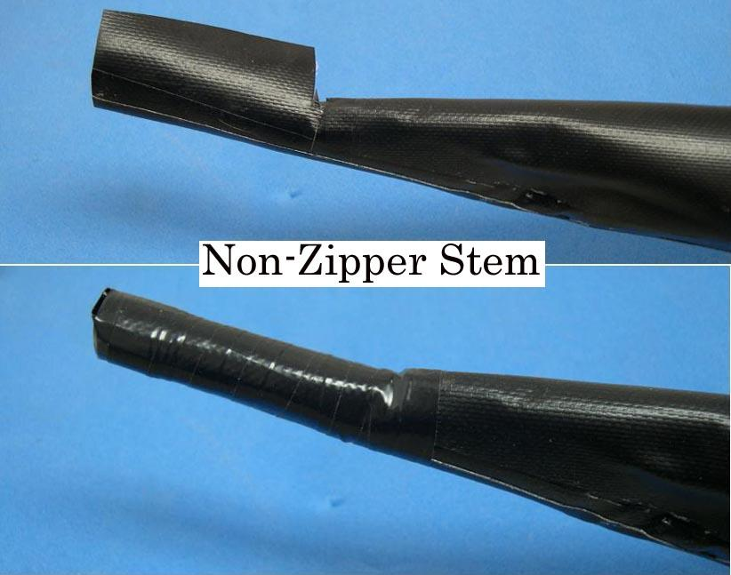

| Zipper to Stem Attachment ( 11 of 11 ) | Menu Previous Page Next Page |
|

Taping The Non-Zipper end - Vinyl electrical tape can also be used to close and waterproof the stem at the non-zipper end of the kayak. Though this end can be sealed permanently with PVC, an open end is easier to handle when sliding in the frame during assembly and breakdown. Either method is recommended.
|
|